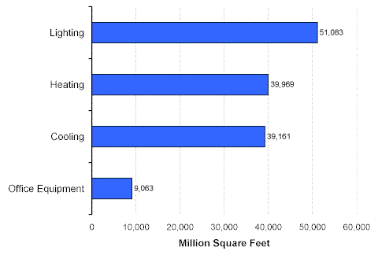
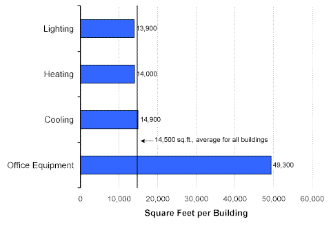

Off-Hour Equipment Reduction
In order to use less energy, many commercial buildings reduced the use of end-use equipment during off-hours. Reduction of lighting, in particular was common—51,083 million square feet, or 76 percent of total commercial floorspace—had such programs (Figure 1). About the same amount of floorspace had either heating system or cooling system off-hour reduction. Off-hour reduction was least for office equipment, at less than 10,000 million square feet.
Figure 1. Off-Hour Equipment Reduction in Commercial Buildings, 1999 Energy Information Administration
Commercial Buildings Energy Consumption Survey
Commercial buildings that reduced their use of office equipment during off-hours were much larger than average, at 49,300 square feet per building (Figure 2). The three other types of end-use equipment (lighting, heating, and cooling equipment) that reduced their use during off-hours were near the average size for all buildings.
Figure 2. Average Building Size by Type of Off-Hour Equipment Reduction in Commercial Buildings, 1999 Energy Information Administration
Commercial Buildings Energy Consumption Survey
Return to:
“Off-Hour Equipment Reduction”
Specific questions may be directed to:
Alan Swenson
alan.swenson@eia.doe.gov
Release date: May 21, 2002
http://www.eia.gov/consumption/commercial/data/archive/cbecs/char99/con_hour.html
If you are having any technical problems with this site, please contact the EIA webmaster at wmaster@eia.doe.gov.